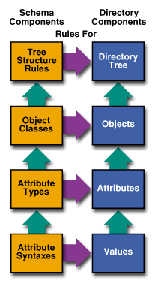
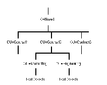
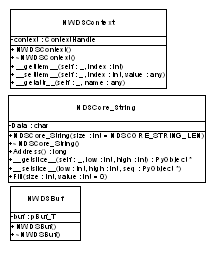
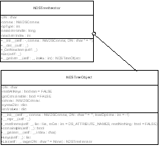
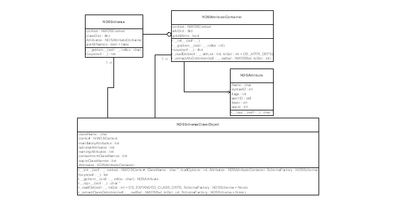
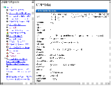
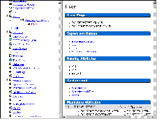

Accessing Novell Directory Services using Python classes is described. Using SWIG to encapsulate the NDS APIs for use by Python is shown along with Python classes developed to provide a more natural Python-like interface to NDS. SWIG typemaps and pseudo-classes and their application to this project are reviewed. NDS integration with Zope to provide an HTML interface to Novell Directory Services is demonstrated. Finally, a port of Python to NetWare as an NLM and the associated porting difficulties are discussed.
Novell NetWare was the first Intel x86 based file server to reach the market. Developed in the early 1980's, it provided file sharing and printing services to 8086 based PCs. Since those early days NetWare has grown in functionality and size, maintaining its lead in the x86 based server market.
With the introduction of NetWare 3.0, the file server architecture moved to 32-bit processors with a multi-threaded operating system. Earlier versions of NetWare were `monolithic' applications -- all functionality was built-in to a single executable. NetWare 3.0 introduced the NLM (NetWare Loadable Module) that allowed features to be loaded as needed.
Architecturally, NLMs appear to be a cross between a Windows 16-bit DLL and a Unix process. Typically only one image of an NLM can be loaded in memory at any given time, but an NLM image can be re-used by a new executing process like a shared library. Global variables are per-NLM, not per-process, making some porting projects difficult. NLMs are written in C, with some limited C++ support.
NetWare is a non-preemptive operating system where all NLMs run at ring-0 privilege level. This allows NetWare to perform well, but errant NLMs can over-write memory and crash the system. NLMs must run within available RAM. Virtual Memory capability was not made available until Netware 5.0 was released, in 1998.
NetWare 3.0 ran in a minimum of 8 megabytes of RAM. Today's NetWare 5.0 recommends a minimum of 128 Meg of RAM, more depending on disk capacity. Early NetWare versions were viewed as nothing more than a fast disk channel with a disk cache strapped on the side. In the continuing server market race against Windows NT, customers demanded increased server-side functionality and reliability.
To meet market demands, Novell added many features to NetWare in an attempt to keep pace with competing products. Features such as Netscape Enterprise web server, BorderManager firewall, WAN routing, Xfree, Java, and an X.500 style directory dubbed Novell Directory Services (NDS).
NDS is the central feature of this paper, and I'll touch on it more later.
Early releases of MS-DOS did not have any networking functionality. Novell distributed its own client software called a requester that allowed MS-DOS workstations to access NetWare file server resources. The protocol used to communicate between the requester and the file server is proprietary.
However when Microsoft released Windows 95, Microsoft also included it's own implementation of a requester that allowed Windows 95 systems to access NetWare file servers. Microsoft had apparently reverse-engineered the proprietary client-server protocol.
Unfortunately only a subset of the existing NetWare APIs had been implemented in the Microsoft requester. Novell continued to provide its own requester for Windows 95, then Windows NT and Windows 98. Novell's requester is the only way to access all of the NetWare APIs, including Novell Directory Services functions.
Novell has made a limited set of APIs available for Solaris, and Caldera's Linux. NLMs also have access to the same APIs that are available to client systems using Novell's requester.
When NetWare 4.10 was released, Novell included an implementation of an X.500 directory service dubbed Novell Directory Services, or NDS. Like X.500, NDS allows a hierarchy of arbitrary objects to be represented in a tree-like structure. NDS objects are defined by their Schema entry, that describes how the object is named, its superclasses, mandatory and optional attributes. See Novell Directory Services Architecture. provides a pictorial representation of NDS from a design standpoint.
|

|
Since its initial release, Novell has continued to improve and expand NDS's functionality, reliability and performance. Novell's marketing push has NDS functionality appearing in major software applications, routers, management suites, databases, etc.
The NDS Schema defines the structure of objects that can be stored in the directory tree. Objects are defined by the following features:
An NDS object can represent a user or a resource, such as a file server, printer, disk volume, etc. Objects can be created within the NDS tree subject to their containment properties. For example, an Organization object can contain other objects, such as Organizational Units, Localities and Domains. An Organizational Unit can contain Users, Servers and other Organizational Units, but not Organizations. See NDS Objects are arranged in a tree-like hierarchy.. shows a sample directory tree with objects arranged in tree-like fashion.
Each object in the tree is uniquely identified by it's naming attributes, as specified in the schema. For example, my User object is CN=BKC.OU=Engineering.O=MurkWorks.
|

|
The Novell NetWare API set consists of thousands of functions, hundreds of structures and thousands of typedefs. I chose to tackle the NetWare API by first concentrating on the NetWare Directory Services API subset.
The NDS API has approximately 184 functions, 25+ structures and 1047 typedefs or constants. The NDS API is well thought out and `orthogonal' -- that is, there is no overlap in functionality between individual APIs, and the APIs fit together well, requiring no data transforms between functions.
Because NLM development is difficult, I chose to target Windows NT as the initial development platform, with an eye for migrating to NetWare NLMs later. Because the NLM environment does not support C++ code well, I chose to use SWIG rather than CXX as the means to extend Python.
I compiled SWIG 1.1 (Build 685) using Borland C++ 5.01 on Windows NT 4.0. The resulting SWIG produced .c file was also compiled with the Borland C++ Compiler. Although Visual C was also available, using Borland C throughout the project would allow for an easier port to NetWare as an NLM.
One of the objectives of using Python to develop NetWare applications was to simplify the interface to NDS. The NDS API is designed to be used by C, Pascal and Visual Basic applications. It is strictly a procedural API -- no objects or classes are used. Managing NDS objects and the NDS schema involves allocating a context handle that controls which Directory Tree is to be accessed, and where in the tree are we are operating. The context handle must be passed to all NDS functions.
When reading or writing object or schema class properties, a Buf_T structure must be allocated and passed to the appropriate Read/Write functions. Binary data values are packed/unpacked to/from the Buf_T structure through a subset of the NDS API. For example, See Typical NDS function uses context and Buf_T, returns int result. shows the NWDSPutAttrVal function that adds an arbitrary value to a Buf_T structure.
NWDSCCODE NWDSPutAttrVal( NWDSContextHandle context, pBuf_T buf, nuint32 syntaxID, nptr attrVal ); |
Both the context handle and the Buf_T structure lend themselves to being wrapped in a class structure of some kind. These items must be allocated, are referenced by many functions, and must be explicitly freed when no longer needed. See SWIG "classes" ease interfacing to NDS APIs. shows three SWIG level "classes" developed to ease interfacing with the NDS APIs. These are not true classes, rather they are pseudo classes defined using the SWIG addmethods operator.
|

|
See SWIG code to create NWDSBuf Pseudo-Class. shows the SWIG code used to create the NWDSBuf pseudo-class. The pseudo-class includes a constructor that allocates a block of memory. If no argument was passed to the constructor, DEFAULT_MESSAGE_LEN is used as the memory block size, otherwise the value passed is used. The destructor frees the memory block allocated by the constructor.
Using a pseudo-class to represent a buffer allows me to subclass NWDSBuf in Python and add NDS buffer manipulation functions as methods of NWDSBuf. This allows buffers to follow an object oriented model that is easier to use than the procedural NDS APIs. For example, the NWDSPutAttrVal function shown in See Typical NDS function uses context and Buf_T, returns int result. could become a method of an NWDSBuf object, eliminating the need for context and buf to be passed to the function.
Finally, a SWIG typemap is used to coerce functions to accept a NWDSBuf wherever a pBuf_T would normally be used. This is explained further in See Using SWIG in Typemaps..
The SWIG addmethods operator makes it easy to associate arbitrary `methods' with data structures. I did encounter a problem adding a __getattr__ method to the NWDSContext class.
See Implementation of __getattr__ causes conflicts with shadow class. shows the SWIG code used to add __getattr__ to the NWDSContext pseudo class. I needed to provide my own __getattr__ implementation because I wanted to treat index lookups and attribute lookups the same for this pseudo-class.
Unfortunately SWIG always generates its own __getattr__ implementation in the generated shadow class. As a result, SWIG produces the Python code shown in See SWIG produced shadow class replicates __getattr__., consequently conflicting with the __getattr__ method defined using the addmethods operator.
I do not know of a work-around to this problem, other than hand-editing the produced Python code to remove the second __getattr__.
SWIG was designed to accept existing .h files. The NetWare APIs defined in the .h files were designed to be used on multiple operating systems and compilers. To accomplish this, Novell added several layers of typedefs and macros to the .h files. SWIG is unable to properly process the .h files because it does not have a full preprocessor.
The simplest solution I found was to copy the typedefs and structures from each .h file and paste it into my own SWIG .i file for processing as shown in See General format of the master SWIG .i file.. The function definitions from each NetWare .h file were then copied to their own .i file using a parallel naming scheme.
SWIG typemaps are used to coerce the NDS API functions to accept pseudo classes in place of the context and pBuf_T arguments called for. See SWIG Typemap coerces pBuf_T and NWDSContextHandle to use pseudo-class objects. shows the two typemaps used for pBuf_T and context.
In both cases, the in typemap operation is defined for the target variable type. For example, where pBuf_T is called for in the NDS API, we expect the user to pass a NWDSBuf type. The SWIG produced shadow class automatically passes a string "pointer" to the NWDSBuf, which is converted to a real pointer by the SWIG_GetPtr function. After conversion, the NWDSBuf structure is dereferenced to obtain the actual pBuf_T value to pass to the NDS function.
All NDS APIs return an integer result code NWDSCCODE indicating success if zero. By applying the typemap shown in See Automatically throw exception if return code non-zero.., an exception is automatically raised by the NDS API whenever the result code is non-zero. If the result code is zero, its value is not returned because it is not needed.
This is a very handy way of catching errors in the function or its arguments, but there are two problems using this technique.
In the first case, originally I did not Py_INCREF(Py_None) in the exception processing code, thinking that this would resolve the problem where Py_None would be incremented, but never returned. I wanted to avoid having a non-zero reference count on Py_None when Python exited. However I found that when an NDS function was called that had a return type of void, Py_None was returned by the code shown in See Automatically throw exception if return code non-zero...
Eventually Py_None would be DECREF'd to a negative number, thereby causing an exception in my .DLL (and crashing the NLM) whenever the NDS module was unloaded.
I did not expect that decrementing the reference for Py_None to 0 would cause a fatal crash. Adding the Py_INCREF(Py_None) to the code shown in See Automatically throw exception if return code non-zero.. corrected the problem. A better solution needs to be found to this problem. Perhaps rethinking my design, or adding functionality to SWIG to avoid the unnecessary Py_None increment.
Also, I suggest a change in Python 1.6 to not-crash if a reference count goes negative on built-in statically allocated values such as Py_None. Perhaps a simple warning could be printed instead.
SWIG produces a .c file which is compiled by Borland C into a DLL after linking with Novell supplied libraries. The resulting .DLL can be loaded on any WIN32 workstation if that workstation is running Novell's requester.
When porting Python to NetWare as an NLM, the .c file was compiled directly into Python as a built-in module because dynamic binary module loading is not available on NetWare yet.
The NDS API can be divided into two major sections: Schema and Tree Objects. These two major categories are each represented by their own Python module.
To access Directory Services, the NDS API requires the programmer to follow a complicated sequence of steps. For example, to read the GUID attribute of an NDS User object:
Python naturally lends itself to a gross simplification of this process, by reducing it to these steps:
Using exceptions allows us to automatically release buffers, context and iteration handle if desired. Additionally, the Python for/in operator is a convenient mechanism for iterating over the objects of an NDS Tree through the use of an xrange-like NDSTreeIterator object.
Two Python classes are used to access NDS Tree Objects, as shown in See NDS Object Python Classes.. An NDSTreeObject encapsulates all of the NDS APIs that are used to access NDS Objects and their properties. The NDSTreeIterator object is used to iterate through the subobjects of an NDS Tree object, for example, all the objects in the root Organization.
|

|
The NDSTreeObject.__repr__ method returns the NDS distinguished name of the object.
See Iterating over NDS Tree objects using the NDSTreeIterator object. shows how the NDSObject classes are used. An NDSContext object is created and its settings are changed to reference the tree TestTree, with a default naming context of MyCompany. The root of the tree is obtained and it's GUID attribute is retrieved. Finally, all leaves of the root are listed using the NDSTreeIterator created through the NDSObject.List() function.
Four Python classes are used to access the NDS Schema APIs as shown in See NDS Schema Python Classes.. The four classes include:
See Iterating over NDS Schema Class objects to display their superclasses. shows how the NDSSchema object is used to iterate over all defined Schema Classes and display their superClassNames. The NDSSchema.keys() function returns a list of Schema Class Names. The NDSSchema.__getitem__ function is used to return an NDSSchemaClassObject which in turn references its superClassNames attribute.
|

|
"Zope" is an acronym for "Z Object Publishing Environment." In Zope, web pages are built by adding "objects" and modifying object "properties". Several built-in objects like Folders, Documents, and Images are included in the software and are combined together to produce a completed web site.
Zope allows externally defined Python code to be executed within the context of a Web request. These External Procedures may in-turn load other Python modules. I added functionality from the NDSSchema and NDSObject Python classes to Zope through a few simple external procedures.
One of the most common NDS operations is browsing NDS Tree Objects and their properties. Using the NDSTreeIterator object in conjunction with the Zope #tree DHTML tag, it is easy to create a tree-like hierarchical listing of NDS Objects as shown in See Zope Tree Hierarchy shows NDS Objects and their attributes.. The left side of the frame displays NDS objects. Selecting an Object updates the right side of the display to show the Object properties and attributes.
To create the object display, the NDSTreeIterator object was used to generate a hierarchal list of objects in a format usable by the Zope #tree tag. When a object is selected, the referenced object is retrieved via an NDSTreeObject object. The objects attributes and values are then displayed in the right-hand frame.
|

|
Similarly, NDS Schema Class definitions can be displayed using a tree-like hierarchy as shown in See Zope Tree Hierarchy navigates Schema Class Definitions.. The left side displays Schema Classes, as they are derived from their respective SuperClasses.
Selecting a Schema Class in the left-hand frame causes the right-hand frame to display Schema Class attributes, including the Class's flags, superClassNames, mandatory and optional attributes.
In this example, the NDSSchema.keys() function is called sequentially to return a list of classes whose only parent class is "top". Subsequnetly expanding one of these classes returns a list of classes whose parent class is the selected class.
|

|
As previously mentioned, Novell NetWare is based on a 32-bit non-preemptive, multi-threaded operating system where all processes execute at ring-0. With virtual memory only recently becoming available, NLMs must be carefully constructed to run successfully in this environment.
The ultimate goal of my project is to port Python 1.5.2 and Zope to NetWare, capitalizing on the built-in Oracle 8 server, Netscape Enterprise Server and NetWare Directory Services functionality. Unfortunately the design of the NetWare operating system is nothing like the Unix and Windows systems to which Python has already been ported. NLMs are loaded into a global namespace -- exported symbol names must be unique across all NLMs, etc.
Each NLM can only be loaded once unless extraordinary measures are taken. When NLMs are unloaded, they must release all of their allocated memory and semaphores, otherwise the NetWare server may abend. Although NLMs can simulate the functionality of shared libraries and DLLs, there is no concept of per-process private memory, making inter-process and inter-NLM data corruption a strong possibility.
When porting Python to NetWare, I used Borland C++ 5.01 with Base Technology's NLINK Pro. Novell supplies .h files and import libraries for use with this and other compilers, including Watcom and Metrowerks, and Microsoft Visual C.
NLMs are compiled on a Windows NT workstation, then copied to the target NetWare server for execution. Debugging is achieved using a very crude assembler interface built in to the NetWare operating system.
Python attempts to use a single config.h file to set compile-time and run-time options. Unfortunately the Python distribution assumes that the compiler make establishes the target run-time system.
For example, the supplied config.h assumes that if __BORLANDC__ is defined, then Python is being compiled for 16-bit DOS.
I think the best solution to the config.h problem is to make a distinction between the compiler and the target operating system. Rather than automatically setting run-time features based on the compiler type, a two level #ifdef is needed.
Finally, the tail end of config.h has many optional #defines setting various run-time options, but these options must be enabled by hand editing the config.h file. A two level config.h should address this problem as well.
Using config.h is a good idea for centralizing all compile-time and run-time options. Unfortunately other modules sneak in their own #ifdef morass rather than using config.h. The socketmodule is an example of such a module, and worse, it uses a confusing array of nested #ifdefs to control compile time options. For example:
#ifdef __BEOS__ block = !block; setsockopt( s->sock_fd, SOL_SOCKET, SO_NONBLOCK, (void *)(&block), sizeof( int ) ); #else #ifndef MS_WINDOWS #ifdef PYOS_OS2 block = !block; ioctl(s->sock_fd, FIONBIO, (caddr_t)&block, sizeof(block)); #else /* !PYOS_OS2 */ delay_flag = fcntl (s->sock_fd, F_GETFL, 0); if (block) delay_flag &= (~O_NDELAY); else delay_flag |= O_NDELAY; fcntl (s->sock_fd, F_SETFL, delay_flag); #endif /* !PYOS_OS2 */ #else /* MS_WINDOWS */ block = !block; ioctlsocket(s->sock_fd, FIONBIO, (u_long*)&block); #endif /* MS_WINDOWS */ #endif /* __BEOS__ */
The above code is a small example of how #ifdef use can get out of hand if not carefully used. My suggestion for future Python versions is to not use nested #ifdefs, but rather something like the following:
#undef CODE_COVERED #if __BEOS__ && !defined(CODE_COVERED) ... do BEOS specific #define CODE_COVERED #endif #if __NLM__ && !defined(CODE_COVERED) .. do NLM specific #endif #ifndef CODE_COVERED #error no code for this section #endif
The above code allows additional platforms to be easily supported because it is very clear where the new code should be inserted.
The initial NetWare port of Python did not have threads enabled. NetWare supports three types of threads: worker threads, threadgroups and regular threads. Worker threads have no context and are used by the operating system. Threadgroups have their own context such as connection, logged in user, screen. Regular threads are sub-threads of a parent thread group.
The threading module will likely produce regular threads, but developers may wish to create new threadgroup threads to enable Python scripts to execute as multiple logged in users. More thought in this area is needed.
The NetWare Programming with Python project has two major goals, creating client-side NDS development tools and applications, and porting Python to NetWare as an NLM.
Python based client-side NDS tools promise to allow developers to investigate the NDS API without suffering through an exhaustive edit-compile-test cycle. NDS APIs can be exercised interactively. Python allows NDS Objects and Schema Classes to be represented in an easy-to-understand object oriented fashion. This allows programmers to develop program concepts around NDS without getting bogged down in the difficult details of NDS APIs.
Additionally, Python can be used as a code generator -- automatically producing the necessary C code to manipulate NDS Directory Objects and Schema Classes without mind-numbing repetition of hand written code.
By combining the NDS Python classes with Zope, an NDS Schema Class builder can be realized. The Schema builder allows the developer to automatically generate C code for creating an NDS Schema Class by selecting the SuperClass(s), mandatory and optional attributes through an HTML interface generated by Zope.
New Schema attributes can be created and retained in the Schema Builder through the use of a Zope ZClass object. Finally, DHTML methods generate the appropriate C code for inclusion in server-side or client-side applications.
Snap-Ins are Windows DLLs that enable NWAdmin (the NetWare Directory Services Management tool) to create, display and manage custom directory objects. Snap-In development is very difficult and time consuming.
The Schema Class Builder can be expanded to automatically generate basic NWAdmin Snap-In source code. Using a template system and layout manager, a simple Windows Dialog with multi-edit page tabs can be produced.
The initial port of Python 1.5.2b1 to NetWare proved that Python could be made to operate in the NetWare server environment. To be completely useful, several major improvements need to be made to the program.
All built-in and dynamically loaded binary modules must be able to gracefully recover from, or properly handle, a failed memory allocation. To pass Novell certification, the Python NLM must not crash, corrupt or abend the file server when a memory allocation fails.
Although most users will probably load Python in a ring-3 process to obtain access to virtual memory, older versions of NetWare do not have this functionality. Python must properly free ALL allocated memory, sockets and other resources before it is unloaded.
To properly release allocated resources, module finalization must be added to Python. A builtin or dynamically loaded binary must be able to free semaphores, sockets, handles and allocated memory before being unloaded.
The initial port of Python to NetWare produced an NLM that was 750Kbytes. This may be small compared to Unix or Windows programs, but for an NLM that is very large. Many standard builtin modules were not included in this initial port.
Dynamically loading and linking to NLMs is possible, but difficult. A good, standard solution is needed to allow Python to dynamically import NLMs, as well as to be dynamically imported by other NLMs.
Novell's UCS (Universal Component System) may be the solution to dynamic loading on NetWare. UCS currently supports Perl, NetBasic and Novell Enterprise Web Server. It allows all of these components to use resources and methods in other NLMs dynamically. The proper solution to the Python importing dilemma may be for Python to become a UCS component and client.
Unfortunately the UCS API is not yet available. I am working to obtain access to the UCS specification. When that information is available, I will be able to port Python to NetWare and allow it to export functionality to other applications, as well as being imported into other NLMs.